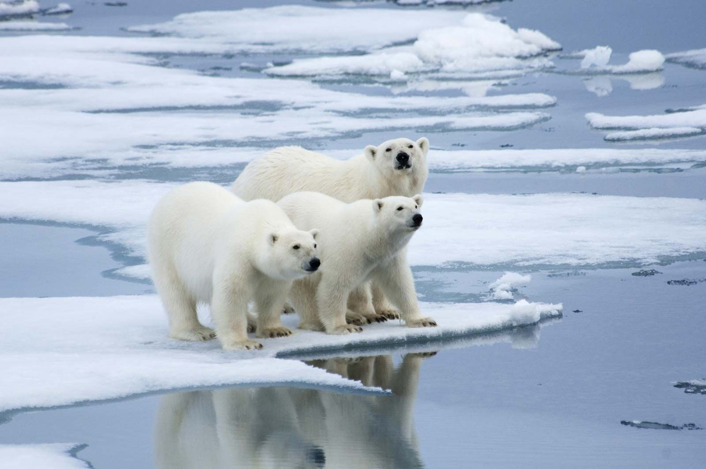

The Polar Bear
The polar bear (Ursus maritimus) is a large bear native to the Arctic and nearby areas. It is closely related to the brown bear, and the two species can interbreed. The polar bear is the largest extant species of bear and land carnivore by body mass, with adult males weighing 300–800 kg (660–1,760 lb). The species is sexually dimorphic, as adult females are much smaller. The polar bear is white- or yellowish-furred with black skin and a thick layer of fat. It is more slender than the brown bear, with a narrower skull, longer neck and lower shoulder hump. Its teeth are sharper and more adapted to cutting meat. The paws are large and allow the bear to walk on ice and paddle in the water.
Polar bears are both terrestrial and pagophilic (ice-living) and are considered marine mammals because of their dependence on marine ecosystems. They prefer the annual sea ice but live on land when the ice melts in the summer. They are mostly carnivorous and specialized for preying on seals, particularly ringed seals. Such prey is typically taken by ambush; the bear may stalk its prey on the ice or in the water, but also will stay at a breathing hole or ice edge to wait for prey to swim by. The bear primarily feeds on the seal's energy-rich blubber. Other prey include walruses, beluga whales and some terrestrial animals. Polar bears are usually solitary but can be found in groups when on land. During the breeding season, male bears guard females and defend them from rivals. Mothers give birth to cubs in maternity dens during the winter. Young stay with their mother for up to two and a half years.

The polar bear is considered a vulnerable species by the International Union for Conservation of Nature (IUCN) with an estimated total population of 22,000 to 31,000 individuals. Its biggest threats are climate change, pollution and energy development. Climate change has caused a decline in sea ice, giving the polar bear less access to its favoured prey and increasing the risk of malnutrition and starvation. Less sea ice also means that the bears must spend more time on land, increasing conflicts with humans. Polar bears have been hunted, both by native and non-native peoples, for their coats, meat and other items. They have been kept in captivity in zoos and circuses and are prevalent in art, folklore, religion and modern culture.
Carl Linnaeus classified the polar bear as a type of brown bear (Ursus arctos), labelling it as Ursus maritimus albus-major, arcticus ('mostly-white sea bear, arctic') in the 1758 edition of his work Systema Naturae.[8] Constantine John Phipps formally described the polar bear as a distinct species, Ursus maritimus in 1774, following his 1773 voyage towards the North Pole.[4][9] Because of its adaptations to a marine environment, some taxonomists, such as Theodore Knottnerus-Meyer, have placed the polar bear in its own genus, Thalarctos.[10][11] However Ursus is widely considered to be the valid genus for the species on the basis of the fossil record and the fact that it can breed with the brown bear.[11][12]
Different subspecies have been proposed including Ursus maritimus maritimus and U. m. marinus.[a][13] However, these are not supported, and the polar bear is considered to be monotypic.[14] One possible fossil subspecies, U. m. tyrannus, was posited in 1964 by Björn Kurtén, who reconstructed the subspecies from a single fragment of an ulna which was approximately 20 percent larger than expected for a polar bear.[12] However, re-evaluation in the 21st century has indicated that the fragment likely comes from a giant brown bear.[15][16]